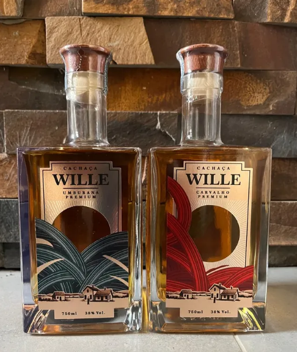
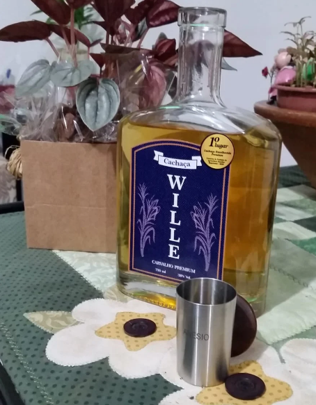

Qualidade Reconhecida Oficialmente
Nossa produção artesanal é submetida aos mais rigorosos critérios de avaliação do estado.
- Expointer/RS: 5 premiações (1º ao 3º lugar) em concursos da APRODECANA.
- Testes às Cegas: Excelência sensorial validada por especialistas sem influência de marca.
- Selo Premium 2025: Certificação de origem e qualidade superior.

Selo Cachaça Premium Gaúcha — Edição 2025
Concedido pelo Governo do Estado do RS, por meio da Secretaria de Inovação, Ciência e Tecnologia (Sict). A entrega oficial ocorreu no Centro Administrativo Fernando Ferrari, em Porto Alegre.

Wille Envelhecida Premium Amburana Certificada com o Selo Cachaça Premium Gaúcha 2025
Wille Envelhecida Extra Premium Carvalho Certificada com o Selo Cachaça Premium Gaúcha 2025